Modal-based Damage Localisation on Numerical Benchmark
Abstract
This project studies the different damage indices derived from the damage sensitive features(DSFs) (i.e.mode Shapes, Mode Shape Curvature, Modal Strain Energy and Flexibility Matrix) following the chapter 7 in the book Structural health monitoring Ref. 1 on the numerical benchmark model developed from Konstantinos and Chatzi documented in Ref. 2 and Ref. 3. We can perform modal analysis and time history analysis on the simulator. Here we mainly take the modal analysis as a reference and check which damage indices are more informative based on the time history analysis. We studied the single damage case and the case where two damages are applied at the same time. Finally it shows that all three methods can work on theis settings in the study. The Flexibility matrix method shows less informative probably due to the fact that it needs the mass-normalised mode shapes. This study does not involve model updating and it serves as a basic understanding of the structural health monitoring(SHM).
1. Introduction---Modal-based Damage Localisation
The aim of the project is to localise the damage based on the modal analysis method. So in the introduction part we will first introduce background of Damage Localisation in Section 1.1, then the basic modal analysis method in Section 1.2.
1.1 Damage Localisation
The damage localisation is a subtask inside the structural health monitoring (or the so called Damage Identification). In the Table 1 the four levels of the Damage Identification are listed. Damage Detection is to answer the question whether there are damages in the structure. Then the localisation is to answer the question where the damage could be. The Classification and the quantification is to answer what type the damage is and how severe it is. Finally engineers need to make a decision or take actions based on the damage evaluations and the prediction of how long the structure would survive. In our study, we assume the type of the damage is the stiffness reduction caused by bending and we will go up to 2nd level Damage localisation and also some damage quantification in the 3rd level.
| 1st level | Damage Detection |
| 2nd level | Damage Localisation |
| 3rd level | Damage Classification & Quantification |
| 4th level | Prediction |
There are nine foundamental axioms of structural health monitoring presented in chapter 1 in the book Structural health monitoring Ref. 1. We list the first four of them as a first feeling of structural health monitoring.
- All materials have inherent flaws or defects.
- Damage assessment requires a comparision between two system states.
- Identifying the existence and location of damage can be done in an unsupervised learning mode, but identifying the type of damage present and the damage severity can generally only be done in a supervised learning mode.
- Sensors cannot meassure damage. Feature extraction through signal processing and statistical classification are necessary to convert sensor data into damage information.
1.2 Modal based analysis
From the undamaged state to the damaged state, the mass, stiffness and the damping matrix may all change. However, we assume here first no damping is considered. And the dominated damage type will cause only the stiffness reducton. So the mass matrix remains the same. From the dynamic analysis, we can get the eigenvalue and eigenvector of the dynamic system. In modal analysis, eigenvalue(resonance frequency) and eigenvector(mode shapes) are basic modal properties. Based on the basic modal properties, mode shape curvature(MSC), modal strain energy and flexibility matrix can be further derived and defined in Section 3. The idea of using modal analysis to identify the damage(to be exact the stiffness reduction) is summarised in the Fig. 1.
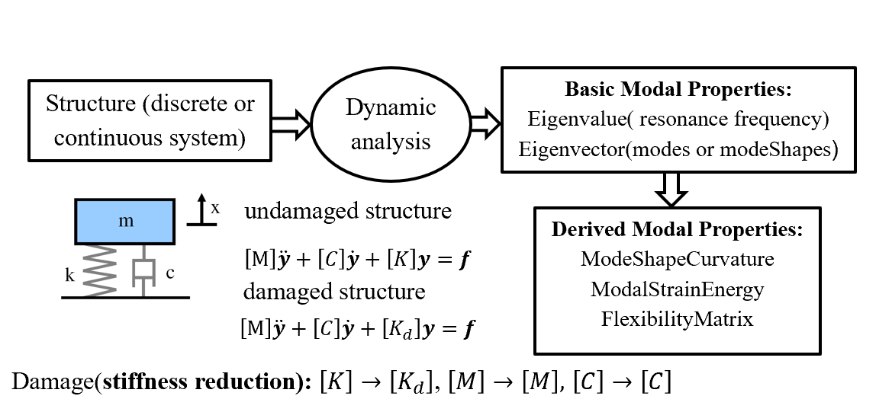 |
2. Method
2.1 Workflow
From the simulator developed from Konstantinos and Chatzi documented in Ref. 2 and Ref. 3. With the simulator we can generated the acceleration data or the mode shapes at the predefined degree of freedom of the FEM model. We can define the geometry, load case and the boundary conditions of the FEM model in this setted up simulator. For example, if we input the location and the severity of the damage. The pseudo-observation data of a sensor can be generated, this data can be the acceleration or mode shapes. Based on the observation data, the modal based method is applied to find the location of the damage we have defined before. The general work flow is summarized in the Fig. 2.
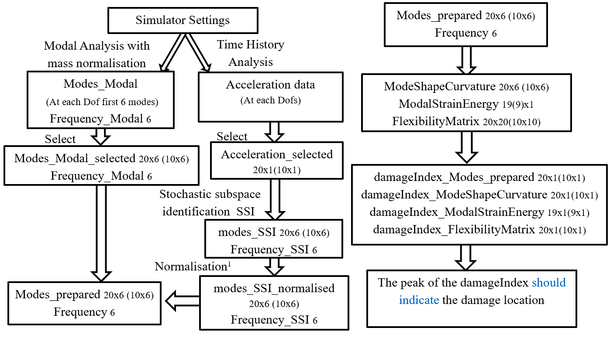 |
2.2 Simulator settings
Below we repeat the simulator settings introduced in Ref. 2 and Ref. 3. in Geometry, Finite Element, Material assumption, Boundary Conditions, damage settings and sensor locations respectively.
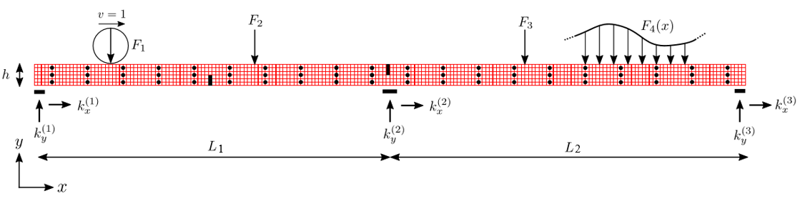 |
2.2.1 Geometry
The length, heights and the weights of the benchmark model in Fig. 3 are defined as: L1 = 12; L2 = 13; h = 0.6 ; w = 0.1
2.2.2 Finite element choice
200x6 isoparametric quadrilateral elements for plane-stress problem are used in the FEM model with dx = 25/200, dy=0.6/6.
2.2.3 Material assumption
linear elastic material with E = 30e10, poisson ratio ν = 0.3, material density ρ = 7800.
2.2.4 Boundary condition
Here only the distributed loads modelled as independent Gaussian white noise F4(x) is applied. The support are the same with the settings in the simulator.2.2.5 Damage settings
The damage are denoted by the black boxes at 1/4,1/2 and 3/4 of the bridge. At each position there are different numbers of affected elements around this position. For example Damaged setting 1, 4 and 8 have only one damaged element. Accordingly damage settting 7, 11 and 12 have ten damaged elements respectively. To make the results more obvious we study the damage case where ten elements are involved. For each damage settings, there are also three different predefined damage severity, i.e. 20%,50%,70% of the stiffness reduction. |
2.2.6 Sensor locations
In the original settings, 60 sensors is predefined in the simulator already shown by the black dot in Fig. 3. Each sensor can return the value in x, y direction( either modes or accelerations). We define the Upper-,Middle-,Lower-sensor as the group of sensors whose y coordinate is 0.5, 0.3 and 0.1. Since only values in y directions are of interest for the bending deformation. Finnaly we choose Uppersensor_y and Uppersensor_y_less 10 shown by Fig. 5 to study further. The distances along x direction between the two neighborhood sensors δx = 10dx(20dx).
 |
3. Damage Assessment
3.1 Damage Index Overview
To define a damage index, we need to find the damage sensitive features(DSF). And we already know that damage assessment is between two states, we need to make an approriate mathematical operations to see the difference between the healthy and unhealthy states:
- #Subtraction: DamageIndex_sub = DSFdamaged-DSFundamaged
- DamageIndex_absdiff = abs(DSFdamaged-DSFundamaged)
- DamageIndex_absabsdiff = abs(abs(DSFdamaged)-abs(DSFundamaged))
- DamageIndex_abssqudiff = abs((DSFdamaged)2-(DSFundamaged)2)
- #Division: DamageIndex_div = DSFdamaged/DSFundamaged
The following is to try different damage sensitive features(DSF) to create the damage index. We will try to introduce the method based on the example, where the configuration is: damage 7 with sensors along the Uppersensor_y and Uppersensor_y_less.
3.2 Mode Shape Curvature
Mode Shape Curvature is the 2nd derivative of mode shapes. In the FEM model we can use the central difference scheme to get the 2nd order derivative of the mode shapes.
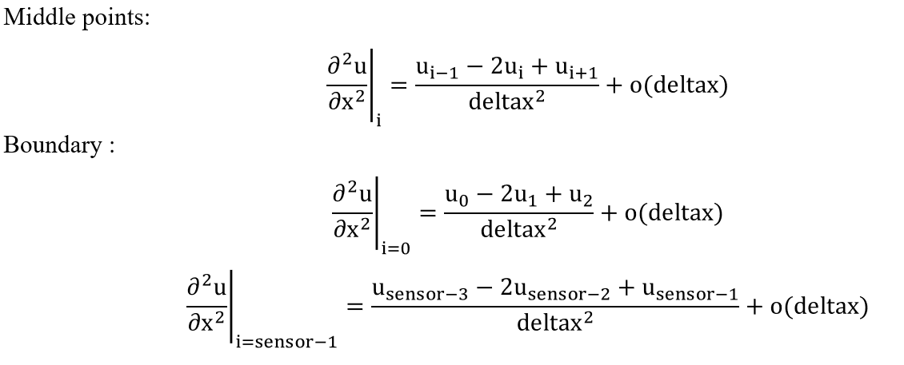 |
3.3 Modal Strain Energy
The strain energy stored in the spring when the structures deform in one of its mode shapes is: \[U = \frac{1}{2}k{\Delta x}^2\] where \(\Delta x\) is the change of length of the springs from its undeformed state. The strain energy U of a Euler-Bernoulli beam of length L is given by \(U = \frac{1}{2}\int_{0}^{l}EI(\frac{\partial^2 w}{\partial x^2})^2\,dx\), where \(w\) is the transverse displacement of the beam;\(x\) is the coordinate along the length of the beam. For a particular mode shape \({\phi}_i\), the strain energy associated with the deformation in that mode shape pattern is \[U_i = \frac{1}{2}\int_{0}^{l}EI(\frac{\partial^2 {\phi}_i}{\partial x^2})^2\,dx\] Since the beam is subdivided into N divisions as shown in the figure, then the energy associated with each subregion j due to the ith mode is given by \[\begin{split} U_{ij} & = \frac{1}{2}\int_{a_j}^{a_{j+1}}(EI)_j(\frac{\partial^2 {\phi}_i}{\partial x^2})^2\,dx\\ & = \frac{1}{2}(EI)_j\int_{a_j}^{a_{j+1}}(\frac{\partial^2 {\phi}_i}{\partial x^2})^2\,dx \end{split}\]
where the fractional energy is defined as \(F_{ij} = \frac{U_{ij}}{U_i}\).If it is assumed that the damage is primarily located at a single subregion then the fractional energy will remain relatively constant in the undamaged subregions and in the damaged region k
Similar quantities can be defined for a damaged structure \(F_{ijd} = \frac{U_{ijd}}{U_{id}}, \sum_{j=0}^{j=N} F_{ij}=\sum_{j=0}^{j=N} F_{ijd} = 1\) If it is assumed that the damage is primarily located at a single subregion then the fractional energy will remain relatively constant in the undamaged subregions and in the damaged region k.\[F_{ikd}=F_{ik}\] \[\frac{U_{ikd}}{U_{id}}=\frac{U_{ik}}{U_i}\frac{(EI)_k}{((EI)_d)_k}=\frac{\frac{\int_{a_k}^{a_{k+1}}(\frac{\partial^2 \phi_{i,d}}{\partial x^2})^2\,dx}{\int_{0}^{l}(\frac{\partial^2 \phi_{i,d}}{\partial x^2})^2\,dx }}{\frac{\int_{a_k}^{a_{k+1}}(\frac{\partial^2 \phi_{i}}{\partial x^2})^2\,dx}{\int_{0}^{l}(\frac{\partial^2 \phi_{i}}{\partial x^2})^2\,dx}}\equiv \frac{f_{ikd}}{f_{ik}}\] damage index(DI) can be defined as the sum of all order: \[\beta_k = \frac{\sum_{i=1}^{i=m} f_{ikd}}{\sum_{i=1}^{i=m}f_{ik}}\] or defined as the sum of the first two orders: \[\beta_2k = \frac{\sum_{i=1}^{i=2} f_{ikd}}{\sum_{i=1}^{i=2}f_{ik}}\]
3.4 Flexibility Matrix
\[[f]= [K][y]\] \[[y]= [K]^{-1}[f]=[G][f]\] where \([f]\) is the vector of static loads applied to the structure and \([y]\) is a vector corresponding to the deformation. For an undamaged structure with m mass-normalised modal vectors identified from experimental data obtained at n degrees of freedom, the flexibility matrix \([G]_{n\times n}\) can be derived from the modal data as follows : \[\label{eqn:G}
[G]\approx [\Phi][\Omega][\Omega]^T\approx \sum_{i=1}^{i=m}\frac{1}{(\omega_i)^2}[\phi]_i[\phi]_i^T\] where the mode shape matrix: \([\Phi] = [\phi]_1,[\phi]_2,...,[\phi]_m\) the \(i^{th}\) mass normalised mode shape: \([\phi]_i\)
the modal stiffness matrix: \([\Omega]=diag(\omega_i^2)\)
the \(i^{th}\) modal frequency: \(\omega_i\)
Inspired by equation ([G]) for each order we define: \[\label{eqn:g}
[g] \approx \frac{1}{(\omega_i)^2}[\phi]_i[\phi]_i^T\] Then the damage index(DI) can be defined as Fig. Flexibility Matrix Damage Index illustration.

We can obtain first m modes, then we have a \(n\times n\) flexibility matrix for each order \([g]\). n is the number of degree of freedoms we can have, i.e. the number of sensors we setted up. Based on the flexibility matrix for each order \([g]\), a vector \(\vec{v}_{n \times 1}\) for each order is defined to sum up all the columns of \([g]\). Same as the idea to compute the mode shape curvature, we calculate the v curvature \(\vec{vc}_{n \times 1}\) and try to define the damage index of the \(\vec{v}\) curvature \(\vec{vc}\) through
\[FMDI_{absabsdiff} =||\vec{vc}_{da}|-|\vec{vc}_{un}||\] \[FMDI_{abssqudiff} =|(\vec{vc}_{da})^2-(\vec{vc}_{un})^2|\]
4. Results and discussions
4.1 One-damage-case_Damage 7
4.1.1 Damage 7 frequency
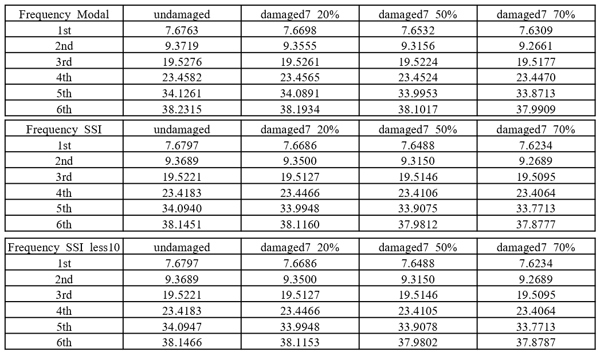 |
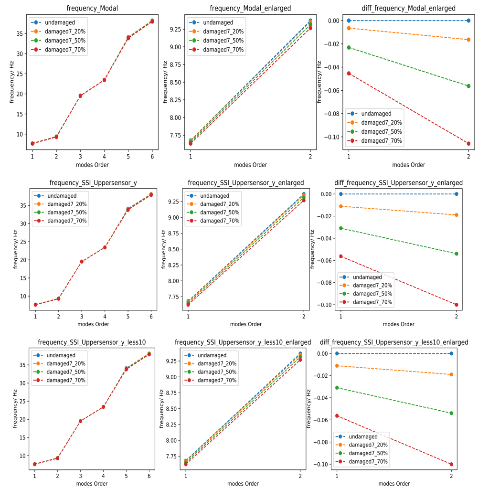 |
4.1.2 Damage 7 modes
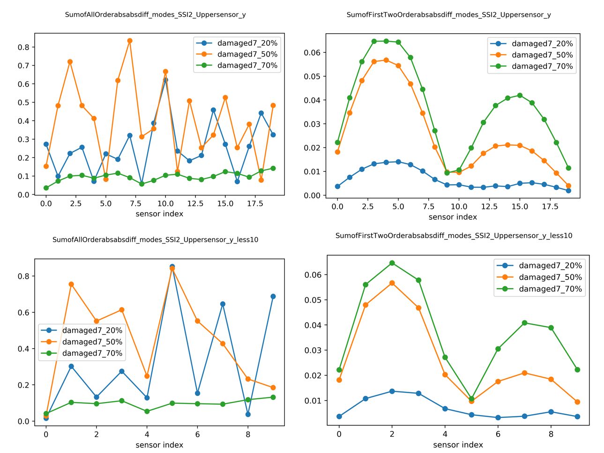 |
4.1.3 Damage 7 Mode Shape Curvature
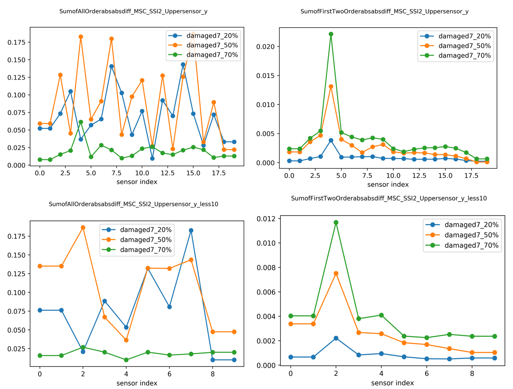 |
4.1.4 Damage 7 Modal Strain Energy
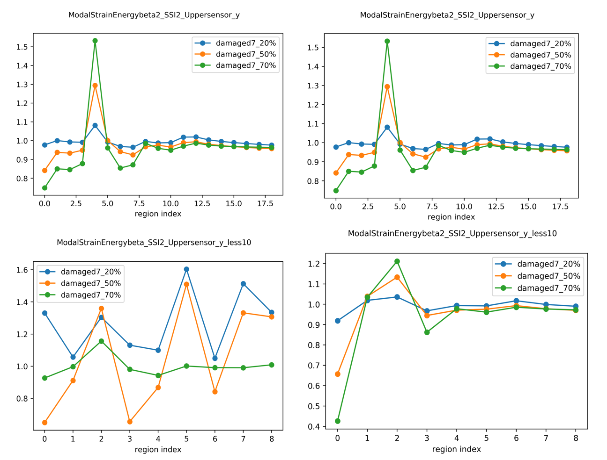 |
4.1.5 Damage 7 Flexibility Matrix
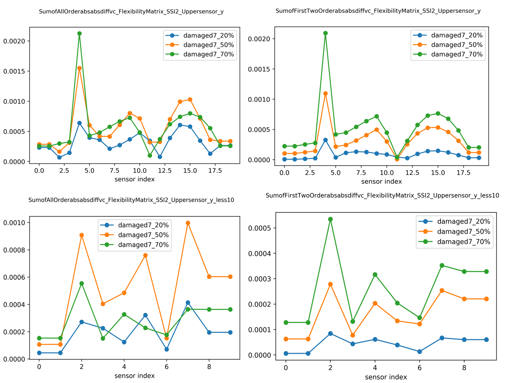 |
4.2 Two-damages-case_Damage 7 and 11 at the same time (The case is snamed as damage13) with 5% noise when obtaining the SSI data
4.2.1 Damage 13 Mode Shape Curvature
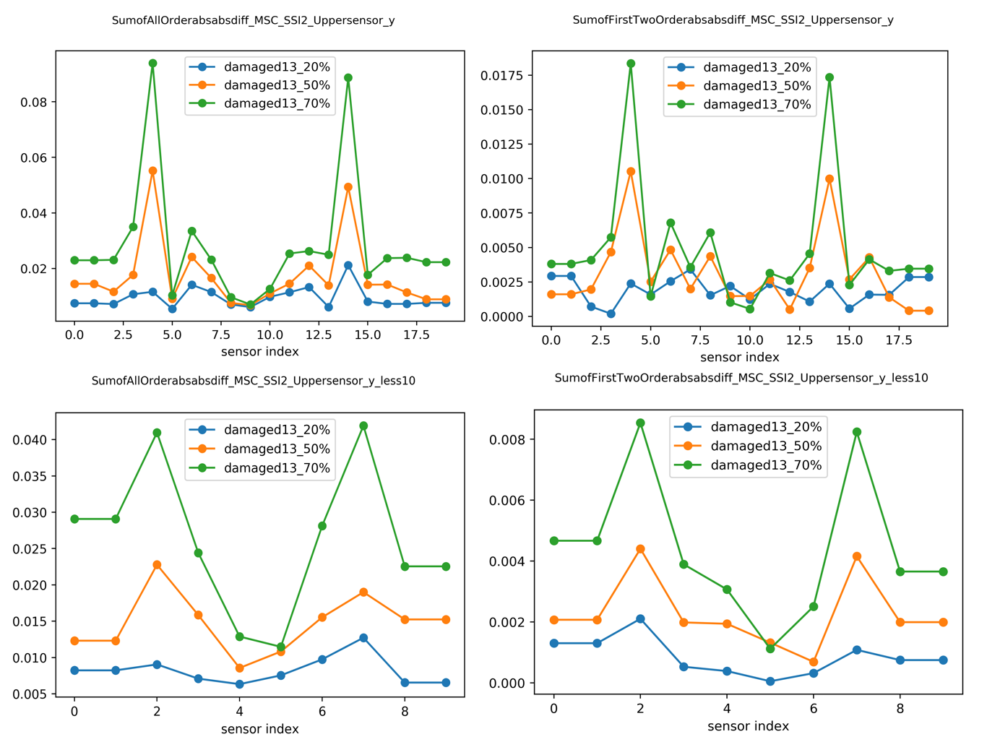 |
4.2.2 Damage 13 Modal strain Energy
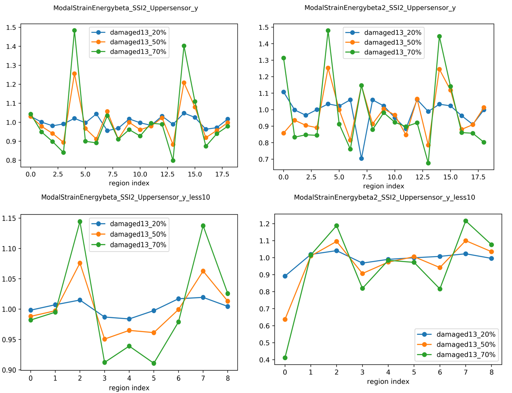 |
4.2.3 Damage 13 Flexibility Matrix
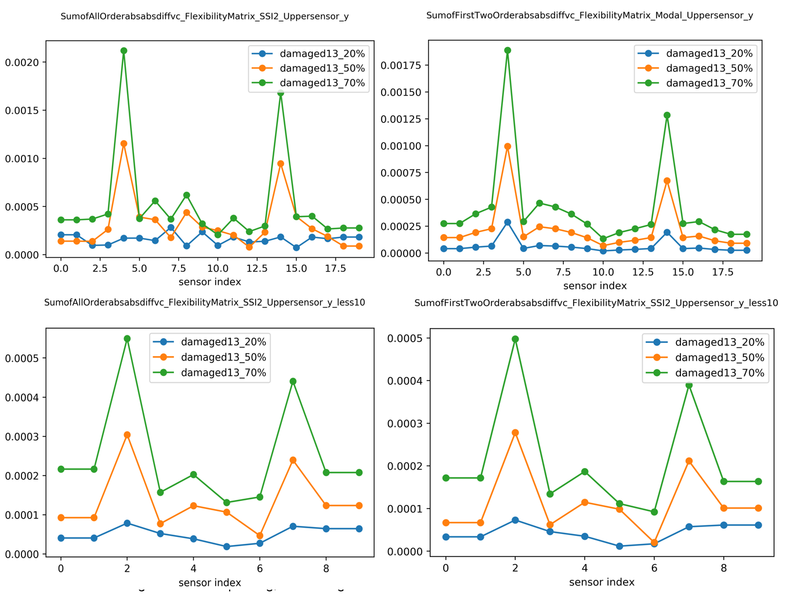 |
Discussion
The Damage index based on frequency can give use the information about the damage existence and damage relative severity. The modes is easily affected by the noise, here mainly the noise from the stochastic subspace identification SSI process Ref. 4. In the example, we can get first six order of modes and it is ordered from the smallest frequency to the largest frequency. The higher order modes have more noise. So when we only sum up the first two order, the noise from higher order are avoided, and the plot can give us some damage information. If we use the damage index from the mode shape curvature, the sum of first two order is also more informative than um of all order. The same case applies on the damage index based on Modal strain energy and flexibility matrix. The detailed damage index plot for each order is in the pdf file hereFuture work
The damage index based on Flexibility matrix needs the mass-normalised mode shapes. However here we only use the SSI2 with the scaling factor = max(|vector|). If we can use the mass-normalised mode shapes, the damage index based on Flexibility Matrix would be more informative. Then the higher order can be also informative. Since in the expression of [G] has the frequency in the denominator, thus the higher order modes noise can be reduced in this way.References
| [1] |
Farrar, Charles R and Worden, Keith Structural health monitoring: a machine learning perspective John Wiley \& Sons, 2012. [ bib ] |
| [2] |
Tatsis, Konstantinos and Chatzi, Eleni A numerical benchmark for system identification under operational and environmental variability 8th International Operational Modal Analysis Conference , 2019. [ bib ] |
| [3] |
Tatsis, Konstantinos and Ntertimanis, Vasilis K and Chatzi, Eleni Modal-based damage localization on wind turbine blades under environmental variability 9th European Workshop on Structural Health Monitoring : Online Proceedings, 2018. [ bib ] |
| [4] |
Peeters, Bart and De Roeck, Guido Reference-based stochastic subspace identification for output-only modal analysis Mechanical systems and signal processing : Elsevier, 1999. [ bib ] |